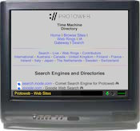
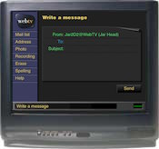
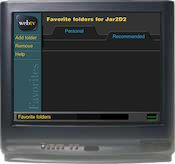
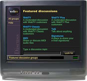
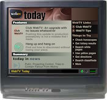
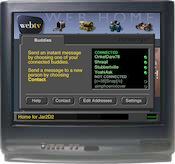
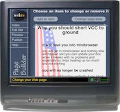

Like the original WebTV service, WebTV Redialed helps brings the Internet to your living room.

Browse
Browse the web and enjoy all the content it has to offer, from the comfort of your couch.
You can also visit websites from years ago thanks to WebTV Redialed's ProtoWeb integration.

Mail
Mail lets you exchange messages with other WebTV Redialed users. With WebTV Plus, you can even add your own photos and audio clips.

Favorites
Favorites allow you to take pages that you might want to revisit later, and save them in folders. You can also organize them to work more efficiently.

Chat
With Chat, you can communicate with others around the world about a variety of topics via IRC (Internet Relay Chat).

Discuss
Read and post about your favorite topics with Discuss. You can also attach photos and audio clips with WebTV Plus.

Centers
With Centers, you can keep up to date with the latest news and weather forecasts, as well as the latest WebTV Redialed news.

Messenger
Messenger allows you to send and receive instant messages with all your friends via CrossTalk or Escargot.

Page Builder
With Page Builder, you can create your own web sites. Add photos, clipart, or long paragraphs, then share your creation with the world!